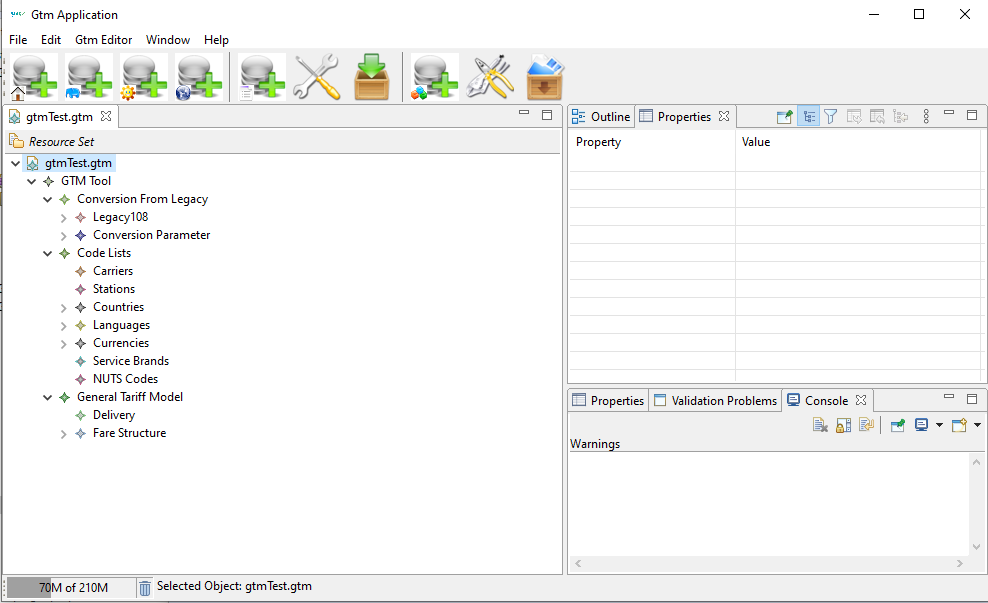
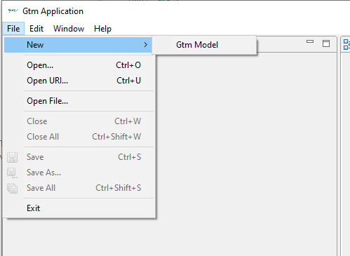
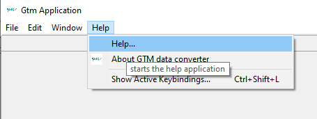
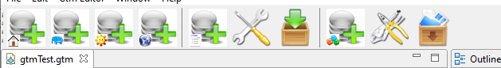
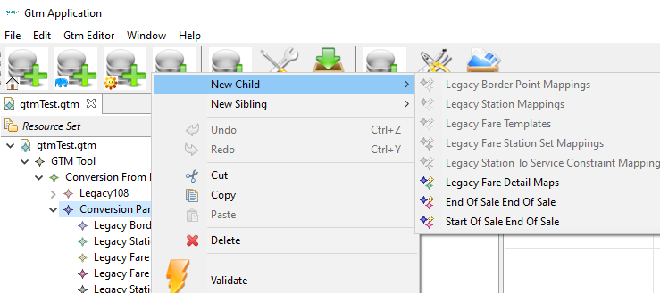

View of the empty application without a data file opened.
View of the empty application without a data file opened.View of the empty application without a data file opened.
View of the application with a data file opened.
File menu.
Help menu.
File menu.
Context menu.
Views can be moved within the application window and closed if not needed. Via the windows menu the original views can be restored.
Tree view on the content of a data file. Selections can be made to display the content in the property view. The context menu provides editing and validation functions.
The outline view is alost the same as the resource view. It provides a tree view on the content of a data file. Selections can be made to display the content in the property view. The context menu provides editing and validation functions.
view on the attributes of a selected item of the tree or outline view. The view provides editing functions on the items (on the leafs of the data tree).
Console view on errors, warnings or informations originationg from the conversion process
A view on the list of validation issues from the last validation called. A double.click opens the associated data item in the tree view.